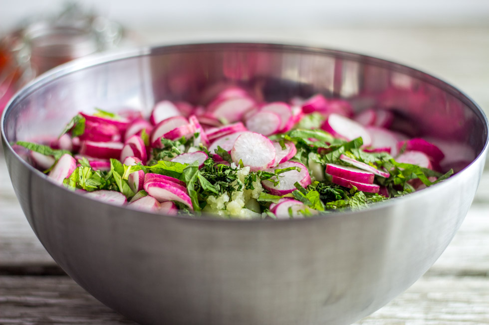

Salade composée

Aujourd’hui je vous retrouve avec une recette de salade composée aux saveurs venues d’ailleurs.
Je pense que l’on connait tous à peu près le même problème en été lorsqu’il s’agit de faire une salade à savoir « on met quoi dedans?? » Très souvent la facilité vient à nous (trop souvent même) et la plupart du temps on prépare une salade avec des tomates du concombre et du maïs. Je vous avoue que j’adore cette salade toute simple, mais quelques fois l’envie d’une bonne salade composée se fait sentir et c’est ce que je vous propose aujourd’hui. Le midi je n’ai que trente minutes pour manger alors je pas le temps de m’asseoir à table et prendre un vrai repas. Mais il me faut quelque chose qui me fasse tenir toute la journée (ou du moins jusqu’à l’heure du goûter). Cette salade composée a parfaitement tenu son rôle et mon chéri l’adore alors autant vous dire que celle-ci on va la refaire un bon nombre de fois… Très loin de la fameuse concombre tomate maïs, on trouve entre autres dans cette salade composée de la tomate, des radis, du pain, des herbes aromatiques et du yaourt!! J’ajoute également une épice : le zahtar. Il est facile d’en trouver en France dans les épiceries spécialisées et il est également possible d’en faire soi même et je vous ai consacré un article rien pour ça ici. Pour celles (et ceux!!) qui n’en n’ont pas ce n’est pas un ingrédient indispensable, c’est juste un petit plus donc ce n’est pas très grave (vous pouvez le remplacer par un mélange quatre épices et ce sera parfait!!).
Vous pouvez servir cette salade composée en entrée ou en plat au choix!
Je vous laisse maintenant découvrir la recette et j’espère qu’elle vous plaira 🙂
Ingrédients
- Yaourt grec - 200g
- Pains pita - 2
- Tomates - 2
- Radis - 100 gr
- Concombre - 1
- Oignons nouveaux - 1 ou 2 petits
- Menthe fraîche - 15g
- Persil - 25 g
- Ail - 1 grosse gousse
- Jus de citron - 3 cuillère à soupe
- Huile d'olive - 3 cuillère à soupe
- Vinaigre de vin blanc - 1 cuillère à soupe
- Sel
- Poivre noir
- Zahtar
Instructions
- Couper les légumes en petits morceaux. Pour les tomates et le concombre couper en petits dés Pour les radis couper en fines rondelles
- Faire cuire le pain pita (vous pouvez le faire griller) et le découper à la main en petits morceaux
- Ciseler le persil et la menthe
- Dans un saladier, verser tous les légumes, le persil et la menthe
- Ajouter le yaourt grec puis le pain pita
- Assaisonner
- Si vous n'avez pas de zahtar vous pouvez le remplacer par un mélange quatre épices ça fera très bien l'affaire.
- Remuer et laisser un peu au frais le temps que toutes les saveurs se mélangent
- Servir bien frais

Les tips de la communauté
Salade simple et composée très appréciée pour sa fraîcheur. Commentaires positifs sur la beauté des photos et la composition. Lecteurs séduits par la légèreté et l'adaptabilité de la recette. Sentiment global très positif avec mentions de variations possibles.
Astuces
- Facile à varier selon les ingrédients disponibles et les préférences
- Parfaite par temps chaud - légère et fraîche
- Photos alléchantes malgré que ce soit juste une salade (indication du bon dressage)
Variantes suggérées
- Enlever les radis si on ne les aime pas
- Varier les légumes selon la saison et les envies